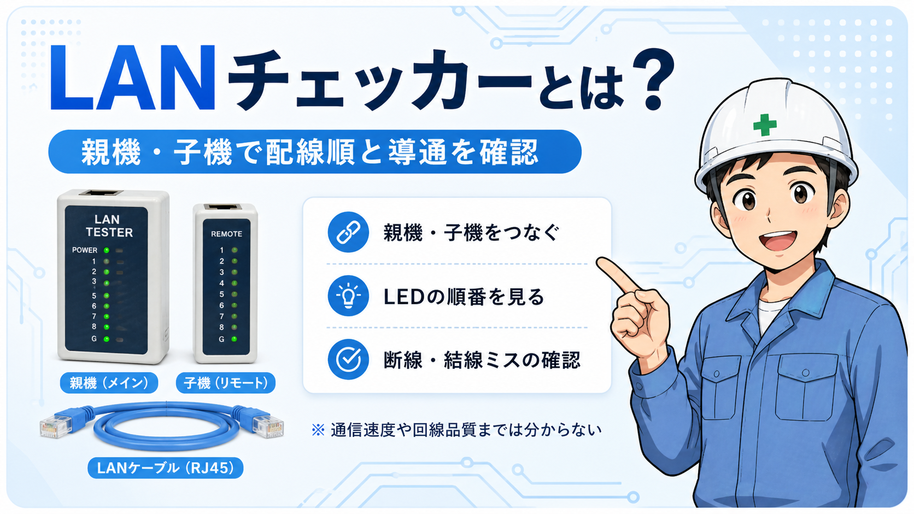
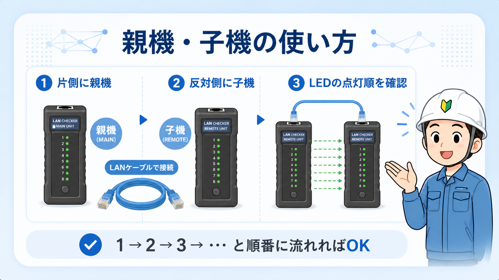
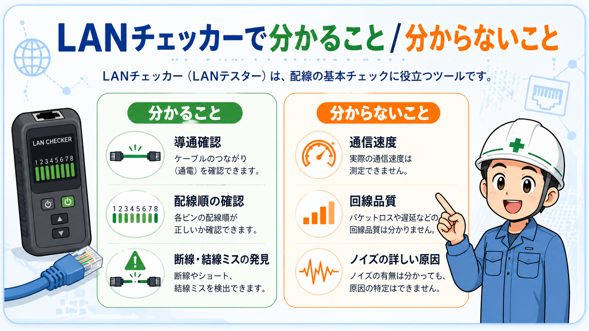
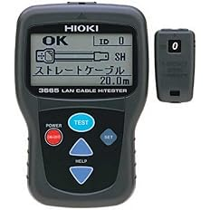

向いている人
- LANプラグを自分でかしめる人
- 親機・子機タイプの見方を知りたい人
- LEDの順番で何を判断できるか整理したい人
LANチェッカーは、LANケーブルを作ったあとに、芯線が正しい順番でつながっているか、断線や接触不良の疑いがないかを確認するために使います。
親機と子機にケーブルを挿し、LEDの1〜8が順番どおりに流れるかを見るのが基本です。

LANチェッカーは通信品質を全部判断する道具ではありません。まずは「導通しているか」「1〜8の配線順が合っているか」を確認する道具として使います。

先輩LANチェッカーは、かしめた後に「順番どおりにつながっているか」を見る道具だよ。

新人LEDが1から8まで順番に光るかを見るんですね。通信速度まで分かるわけではない、と。
先輩そう。まずは導通と配線順の確認。速度や品質は、必要に応じて別の確認をするイメージだね。
親機・子機タイプのLANチェッカーなら、基本の流れはシンプルです。

確認したいLANケーブルの両端を、親機と子機に接続します。
チェッカーの電源を入れて、LEDが順番に流れるかを見ます。
1〜8が同じ順番で点灯するか、番号飛びや入れ替わりがないかを確認します。
番号飛びや入れ替わりがある時は、コネクタ処理や芯線の順番を見直します。
LEDの状態を見ることで、配線順ミスや断線の疑いに気づきやすくなります。
| LEDの状態 | 判断 | 現場で見るポイント |
|---|---|---|
| 1〜8が順番どおり | OK | 導通と配線順はおおむね問題なさそうです。 |
| 番号が飛ぶ | 断線・接触不良の疑い | 芯線が奥まで入っていない、圧着不足、断線などを疑います。 |
| 番号が入れ替わる | 結線順ミスの疑い | T568Bなどの順番を見直し、かしめ直しを検討します。 |
| 片側だけ点かない | 圧着不良・芯線不足の疑い | コネクタ内で芯線が届いていない可能性があります。 |
LANかしめでは、結線順を覚えてからチェッカーで確認する流れにするとミスを減らしやすいです。
1 橙白 → 2 橙 → 3 緑白 → 4 青 → 5 青白 → 6 緑 → 7 茶白 → 8 茶
「オレシ・オレンジ・ミドシ・アオ・アオシ・ミドリ・チャシロ・チャ」のように、自分が思い出しやすい言い方で覚えておくと現場で迷いにくいです。
LANチェッカーは端末処理の確認に強い道具です。通信性能そのものの評価とは分けて考えます。

| 項目 | 判断しやすいこと | 補足 |
|---|---|---|
| 分かること | 導通確認、配線順、断線や結線ミスの疑い | LEDの流れで判断しやすいです。 |
| 分からないこと | 通信速度、回線品質、ノイズ原因の詳細 | 必要に応じて別の測定器や上位機種で確認します。 |
LEDの流れやLANケーブル作成の流れを、動画で補足確認できます。
LEDの流れや親機・子機の接続イメージを先に掴みたい人向けです。
※チェッカーの基本動作と確認手順の参考として使えます。
コネクタ処理の流れを合わせて見ると、結線順の確認ポイントが分かりやすくなります。
※作成手順の補足として、チェッカー確認前のイメージ作りに使えます。
現行記事の商品画像とAmazonリンクを維持して、簡易確認向けと現場使用向けに整理しています。

導通確認や配線順の確認をまず試したい人向けのLANチェッカーです。
LANかしめ後に、1〜8のLED順を見て端末処理を確認したい場合に使いやすい候補です。
まずは簡易チェックをできるようにしておきたい人に向いています。
AmazonでLAN-TST7を見る
現場でLANかしめ後の確認や配線順チェックに使いやすいLANチェッカーです。
簡易モデルよりしっかりした確認用として見たい人に候補になります。
LAN施工の頻度がある程度ある人、チェック作業を安定させたい人に向いています。
AmazonでHIOKI 3665を見るLEDの順番で、配線順ミスや導通不良に気づきやすくなります。
通信速度やノイズ原因の詳細は、LANチェッカーだけでは判断しにくいです。
LANプラグをかしめたら、チェッカー確認までセットにすると安心です。
番号飛びや入れ替わりがある時は、コネクタ処理を見直します。
新人LANは「かしめて終わり」じゃなくて、チェッカーで確認して終わりなんですね。
先輩そう。見た目だけでは判断しにくいから、LEDで順番と導通を見る習慣をつけると安心だよ。
※当サイトはAmazonアソシエイト・プログラムに参加しており、適格販売により収入を得ています。